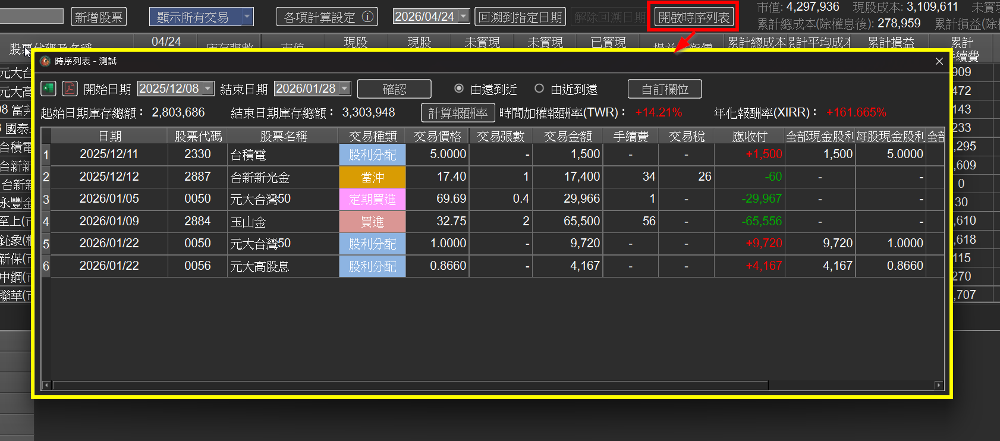

時序列表（TWR / XIRR）
v3.0.0 新增時序列表功能，可自訂任意時間區段， 列出該區間內所有交易明細， 並自動計算這段期間的時間加權報酬率（TWR）與 年化報酬率（XIRR）。
當你想知道「今年到目前為止賺了多少」、「過去三年的真實年化報酬」、 「某個策略執行期間的績效」時，這個功能就能直接給出答案。

1、開啟時序列表
在主畫面工具列上方點擊開啟時序列表按鈕， 即會跳出時序列表視窗。
2、設定時間區段
在視窗上方分別選擇開始日期與 結束日期， 接著按下確認， 系統就會列出該區間內所有交易，並顯示：
● 起始日期庫存總額：區間第一天的部位市值。
● 結束日期庫存總額：區間最後一天的部位市值。
● 每筆交易的日期、股票代碼、 交易種類（買進、賣出、當沖、定期買進、股利分配等）、 交易金額、手續費、 交易稅、應收付等。
3、計算 TWR 與 XIRR
按下計算報酬率，系統會自動算出：
● 時間加權報酬率（TWR）： 排除「資金進出時點」造成的影響，純粹反映投資組合本身的績效， 是用來比較操盤能力最常見的指標， 也是基金績效公開揭露時所採用的計算方式。
● 年化報酬率（XIRR）： 將不規則時間進出的所有現金流，換算成每年的報酬率， 最能反映投資人實際資金的真實年化報酬。
4、自訂欄位與排序
● 點擊自訂欄位可調整列表中要顯示的欄位。
● 切換由遠到近或由近到遠， 可依需求排序交易列表。
5、實用情境
● 年度績效檢視：設定 1/1 ~ 12/31， 立刻拿到當年度真實 TWR 與 XIRR。
● 策略期間驗證：例如導入「定期定額」期間的真實年化報酬， 驗證策略是否如預期。
● 與大盤比較：算出自己的 TWR 後，與同期間台股加權指數比較， 判斷是否有超額報酬。